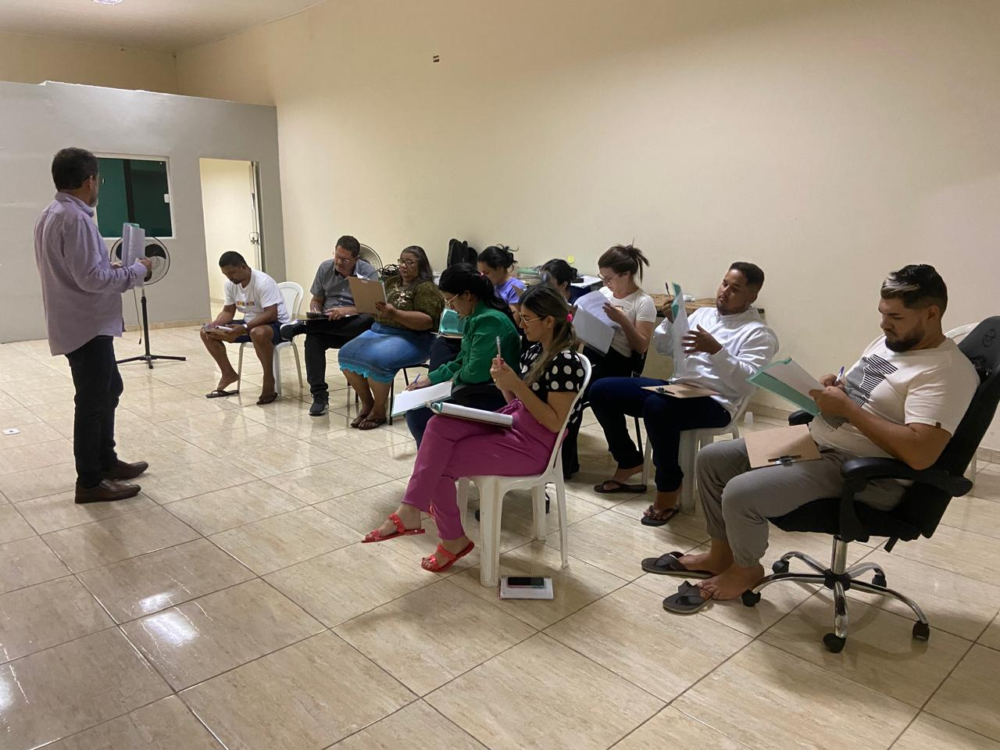
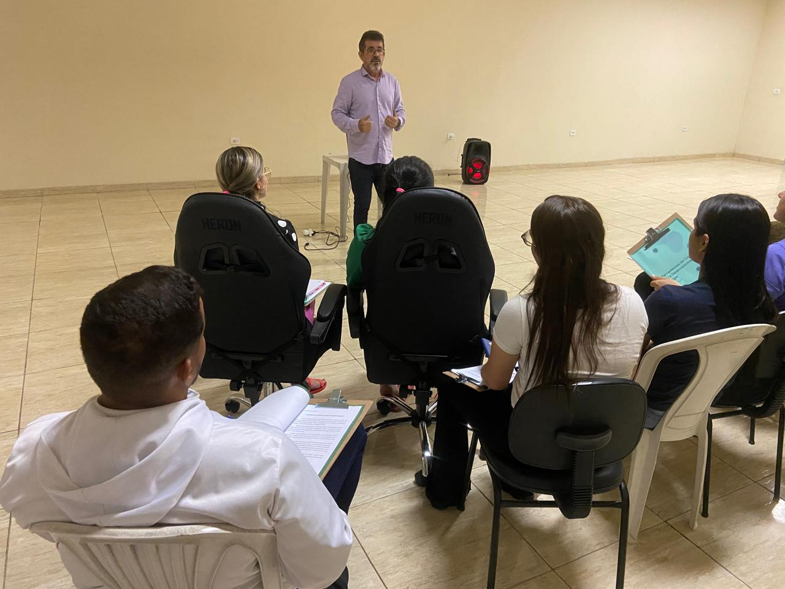
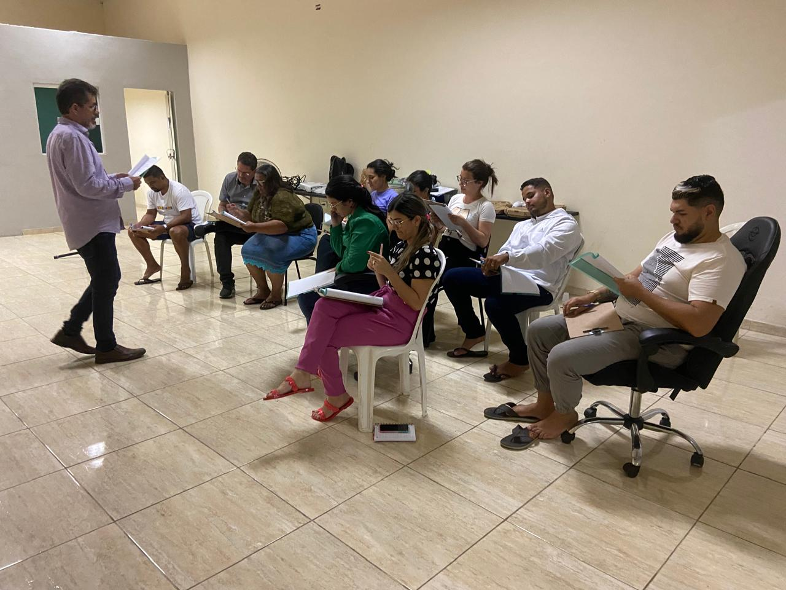
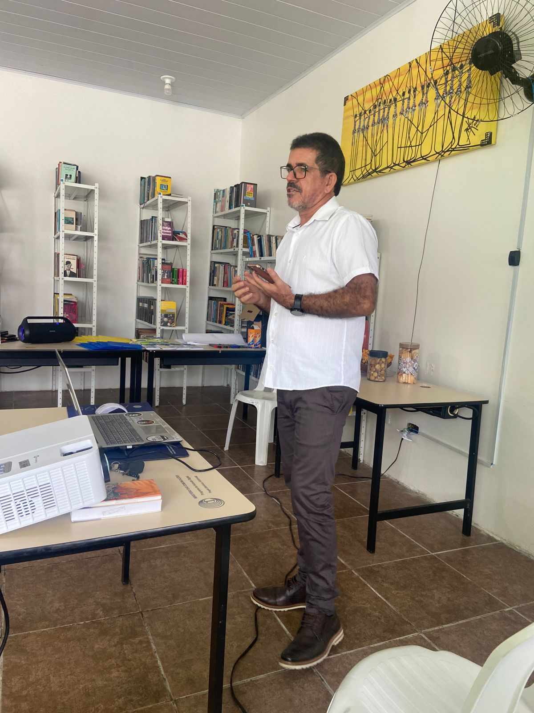
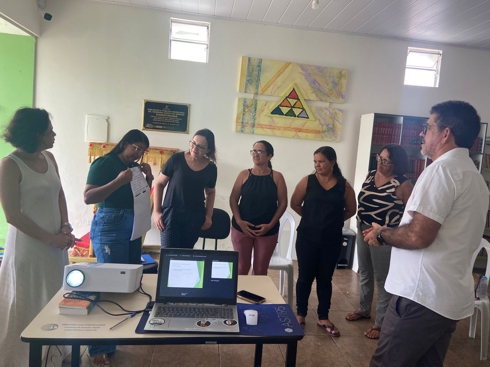
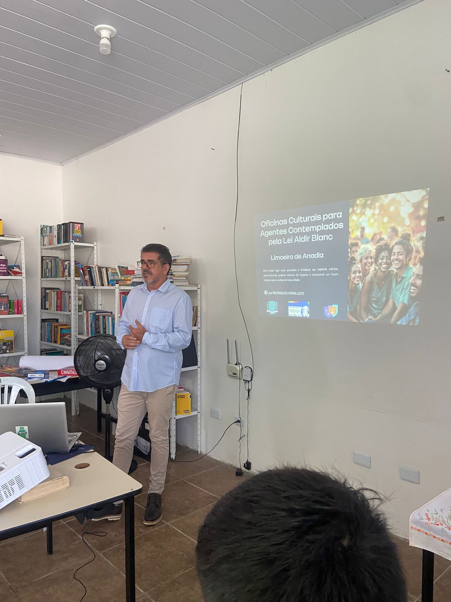
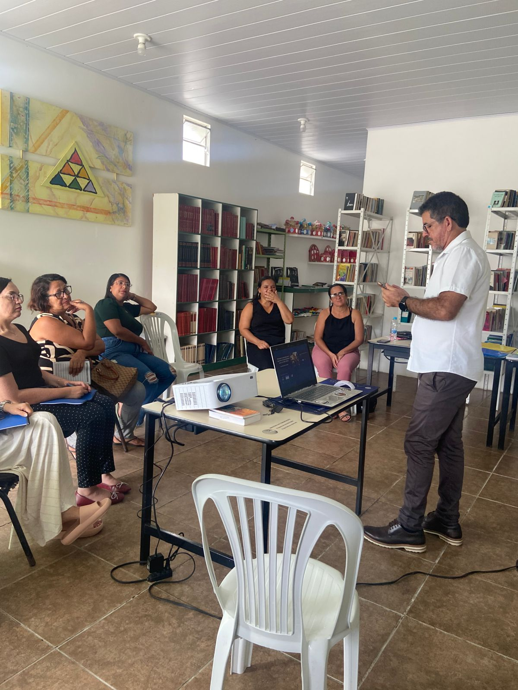
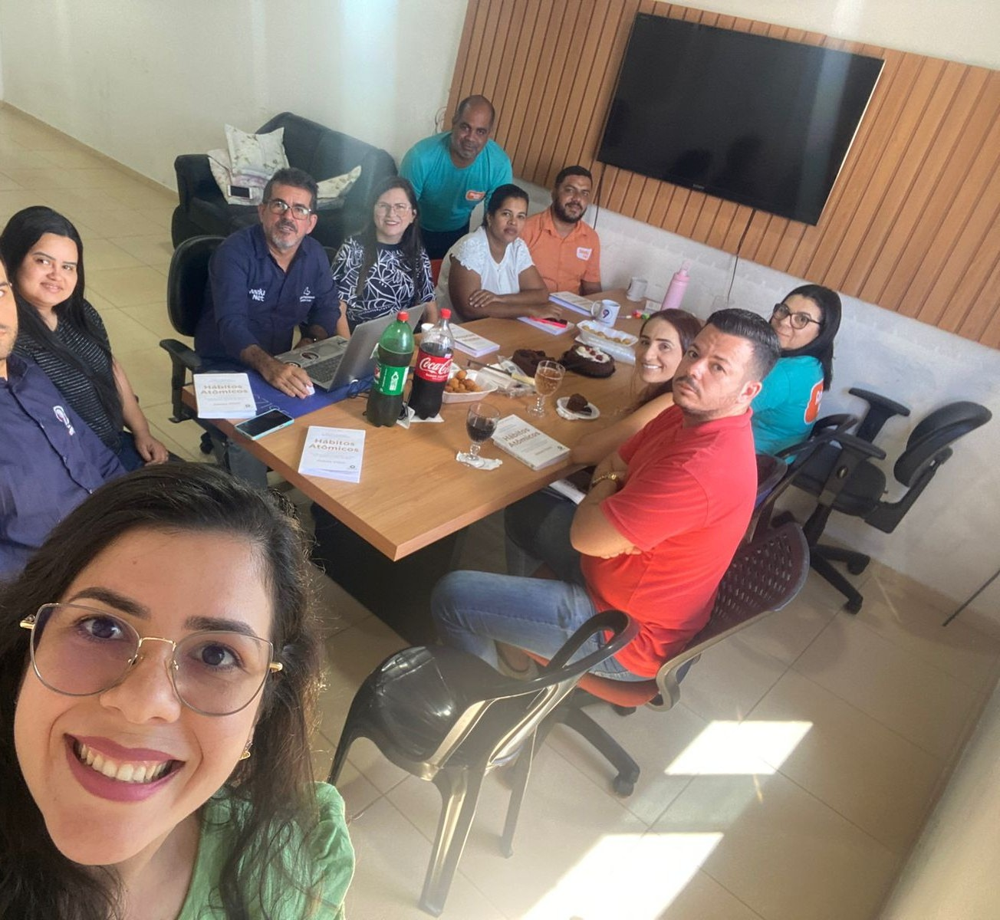
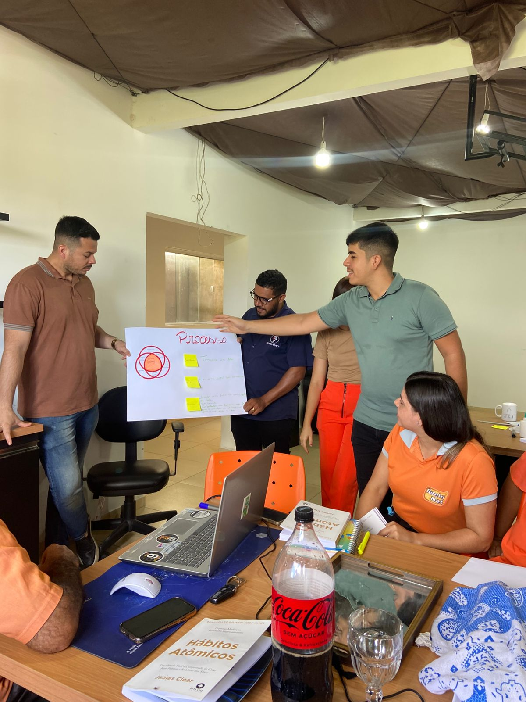
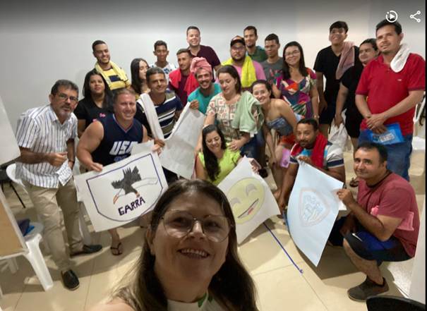

Histórico de Projetos
Cartório de Notas
Ferramentas de Coaching para Desenvolvimento de Equipe - 10 pessoas
  Seletto Contabilidade
Aplicação do Profiler - 4 sócios
Clareza de processos e Delegação de tarefas


Grupo LERS - Promoção de Liderança
Trabalhando Valores, Distorção Cognitiva e Resistência à mudança

Secretaria Municipal de Cultura
Identidade Cultural e Prestação de Contas
   
Grupo Reelu
Auto conhecimento na elaboração dos PDIs
10 líderes e mais de 50 colaboradores
  